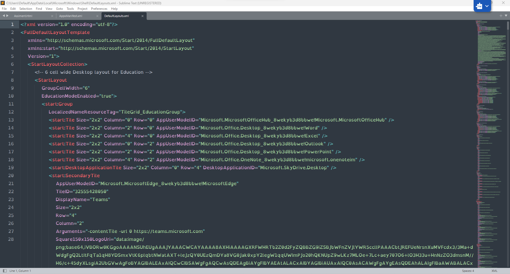

Extensible markup language, or XML for short, is a computer language that organises and labels information. It allows the programmers and software to have information in custom tags, enabling effective exchange of standardised information between individuals and software.
The primary goal of XML is to describe a document's content in an organised, easy-to-read format. The power of XML is that it is easier to customise, collaborate, and maintain consistency. The hierarchical structure that is typical in XML format allows the individual to create sections and subsections in a hierarchical structure, the same tree diagram structure in a written format, which gives it power.
XML is an everyday language used in various applications such as Microsoft Windows 11, where the taskbar settings are stored in an XML format and thus customisable by successfully editing the XML. This format is reliable enough not to have changed since Windows 7.
|  | Start Menu and Taskbar xml file on Jak Kirkland's laptop |